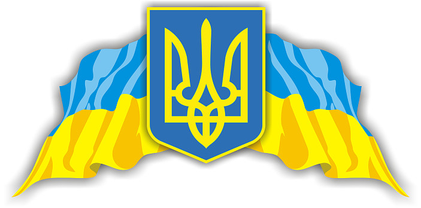

ГербУкраїни
Матеріал з Вікіпедії — вільної енциклопедії.

Матеріал з Вікіпедії — вільної енциклопедії.
Держа́вний герб України, або малий Державний Герб України — офіційний символ держави Україна у вигляді золотого тризуба на синьому щиті. Один із трьох державних символів України нарівні з прапором і гімном [1].
Тризуб був затверджений як малий герб України 19 лютого 1992 року постановою Верховної Ради разом із своїм графічним зображенням.[2] У 1996 році його статус був закріплений у Статті 20 Конституції України, де він також згадується як «Знак Княжої Держави Володимира Великого».[1][3]
Герб походить від знаків Рюриковичів X—XII століття, з часів Київської Русі. Традиція використання герба-тризуба веде свій початок від герба Української Народної Республіки, від ухвал 12 лютого 1918 Малої ради у Коростені та 22 березня того ж року Української Центральної Ради в Києві.[3] Окрім тризуба історичними гербами українських державних утворень були руський лев, руська погоня, лицар із самопалом Війська Запорозького тощо.
Відповідно до Конституції тризуб має стати головним елементом великого Державного Герба України, що має бути прийнятий конституційною більшістю Верховної Ради (2/3 голосів) із урахуванням герба Війська Запорізького.[1] Водночас попри проведення декількох конкурсів на проєкт великого герба, жоден із них так і не був затверджений.[4][5]